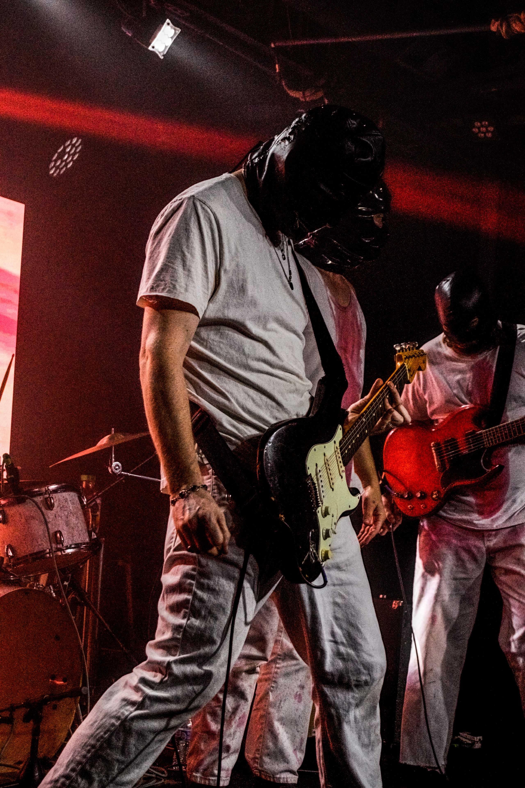
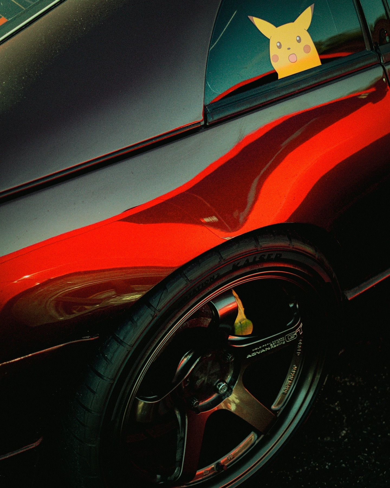
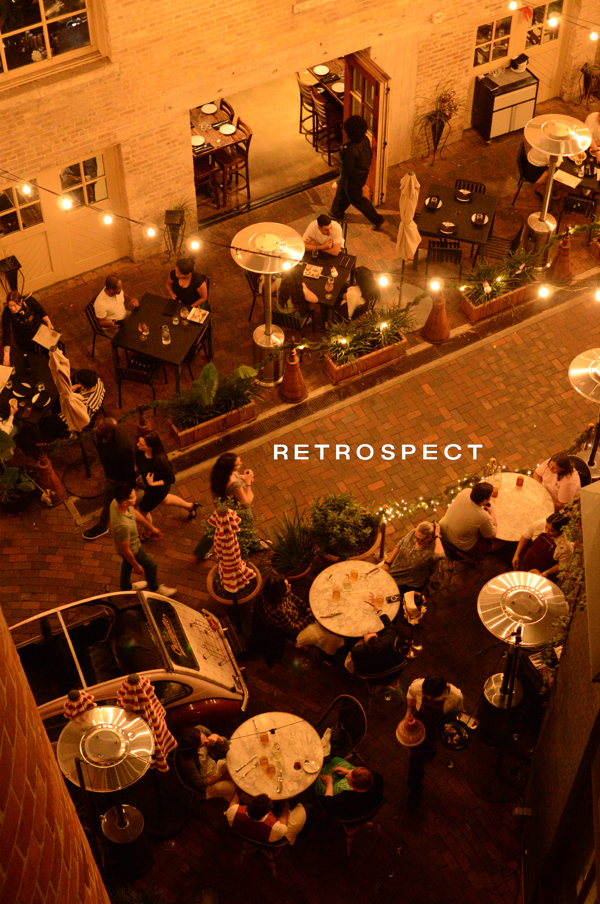
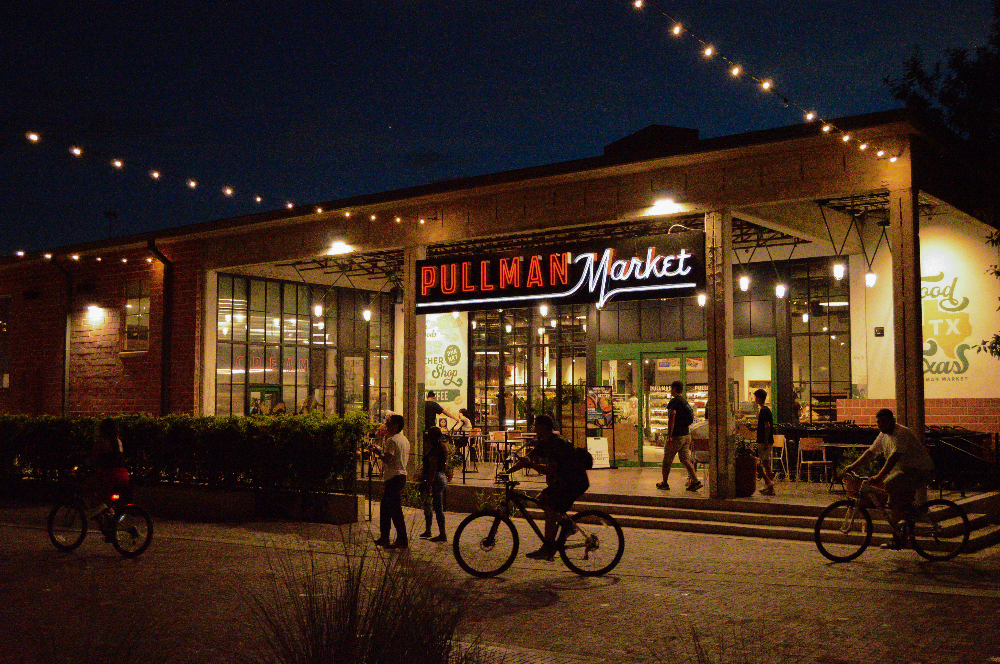
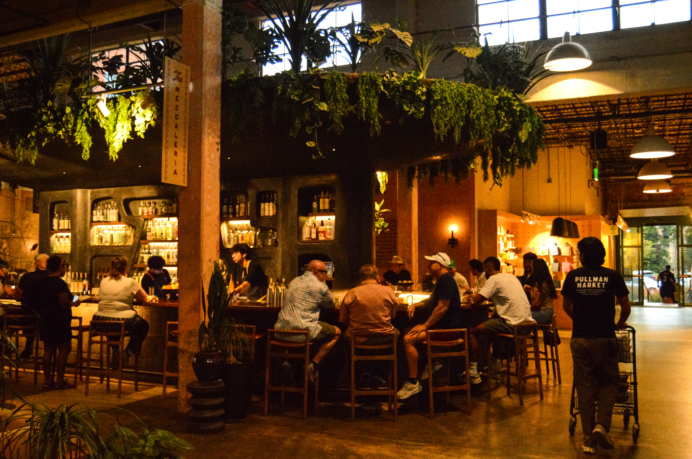
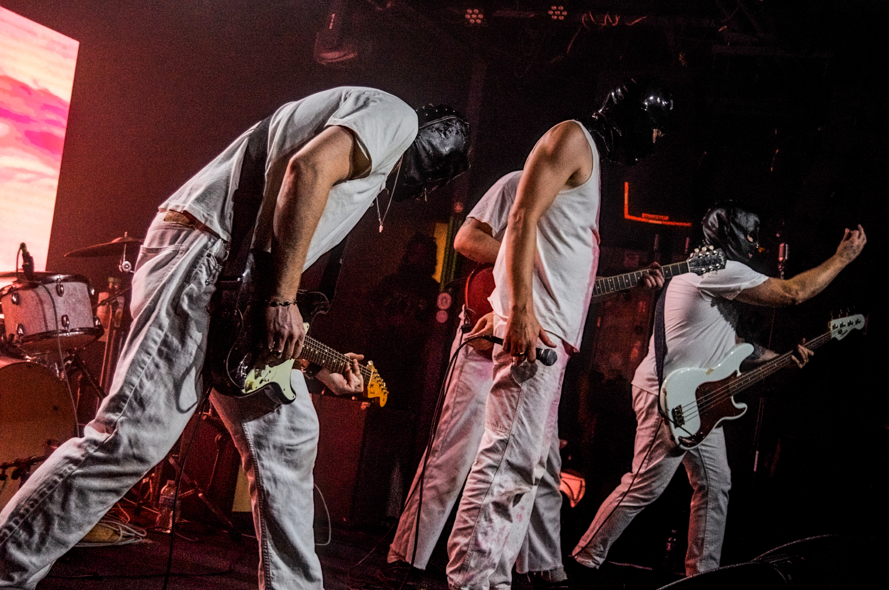
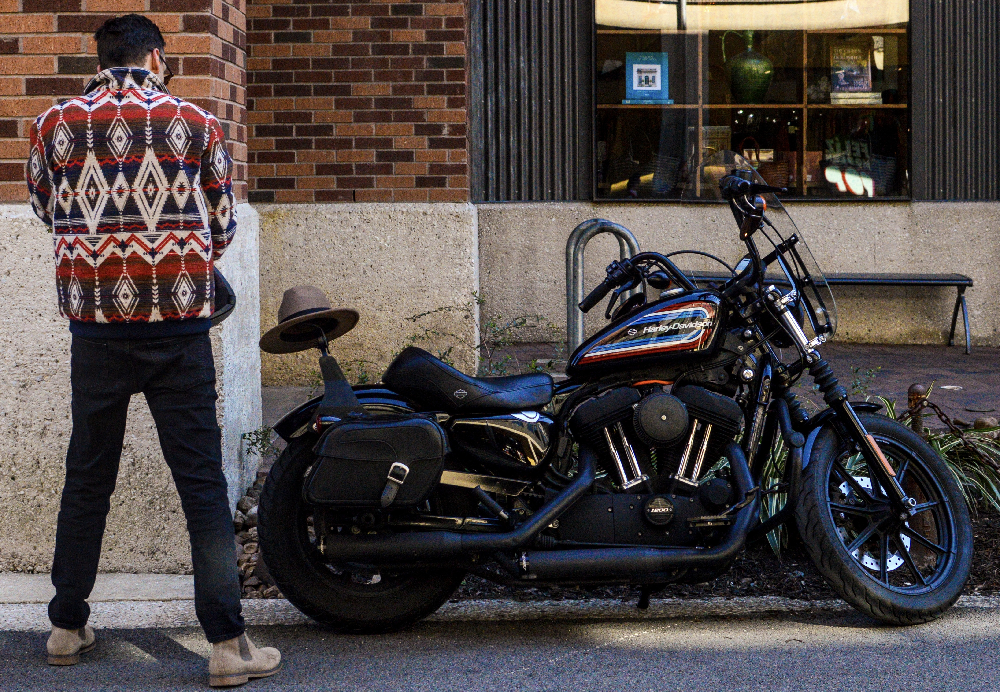
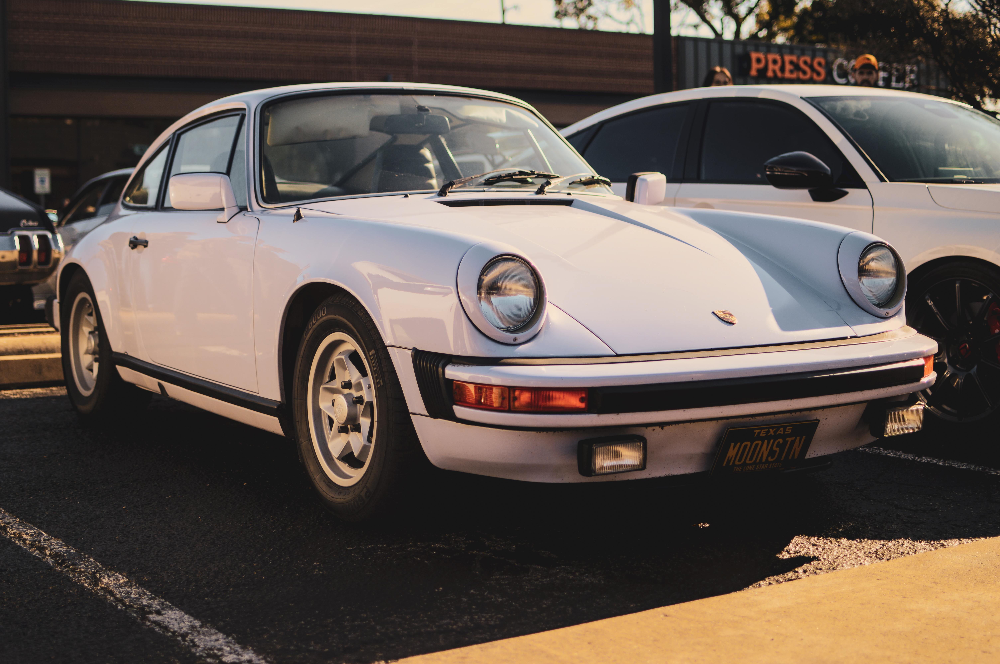
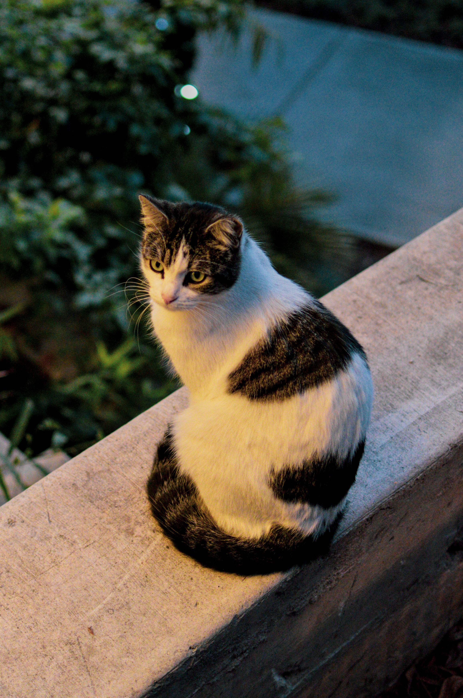
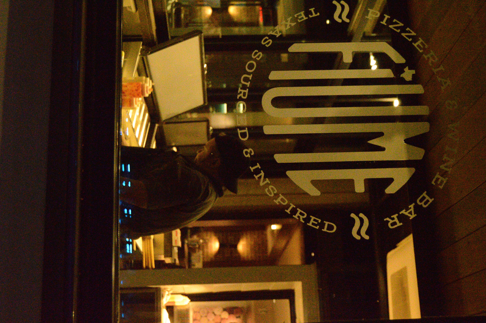
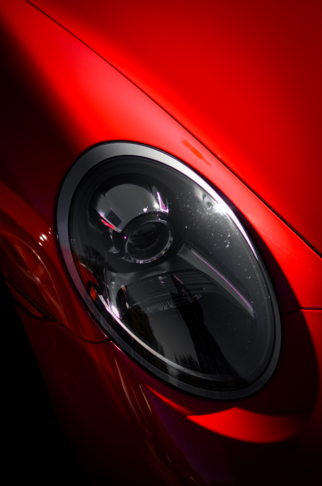


Retrospective
At Retrospect, when a scene deserves to be captured, we prioritize client satisfaction and keep their perspective in focus. Contact us anytime, and we'll start bringing your vision to life.